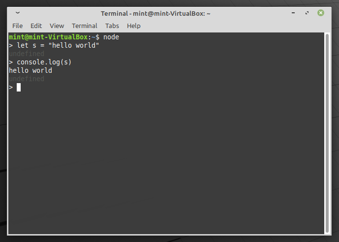
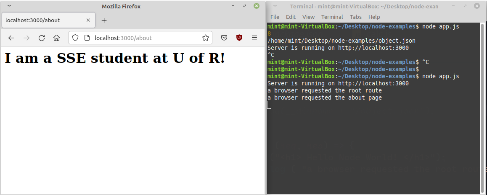

This lab introduces Node.js, a server-side runtime environment that uses JavaScript. This application allows you to write code in JavaScript that exists on the server and can perform actions like serving files, performing database operations and customizing files at runtime through templates.
Lab 6: Node.js
ENSE 374 - Software Engineering Management - Laboratory
University of Regina - Engineering and Applied Science - Software Systems Engineering
Lab Instructor: Adam Tilson
Computer running Windows, MacOS or Linux, with an Intel or AMD-based processor (x86 or x86-64) with administrator privileges.
- A modern web browser, with a strong preference for Firefox or Chrome
- A text editor, preferably VS Code
Unix CLI Refresher
To use node we will need to issue commands through the Terminal.
In VS Code, you can open the integrate terminal with:
Ctrl + shift + \` (backtick), or you can use the Command Palette
WSL2 - Windows System for Linux - Optional, if you are in Windows and need more linux in your life
MVC: Controller
Recall the stack we are developing within this course:

We are now moving over the controller side. The controller should:
- Control the flow of the application execution
- Handle requests from the view and return responses from the model
- Act like a negotiator between the view and the model
e.g.
- view: I want to read or update the database
- controller: let me check if they are making the request correctly
- controller: let me check if they are authorized
- controller: database, give me data
- database: okay, here you go, controller!
- controller: okay, here you go, view!
Back-end
Instead of thinking our system as model-view-control (functional modules), we can think of it as front-end and back-end. “Full-stack” means you code both front-end and back-end
- We looked at Front-end as the GUI / Client / Browser
- Back-end is the Program Logic / Server
- Typically runs on a remote computer connected over the internet
- Why?
- Anyone can read your JavaScript code!
- Anything that needs to be secret needs to go on the back end
- trade secrets, business logic, transaction details, etc.
- Why?
- Typically runs on a remote computer connected over the internet
- The back end typically includes the “Controller” and the “Model”.
Common Back-end Technologies
Php, Ruby, Java, Python, Node.js
Frameworks: Cake (PHP), Rails (Ruby), Express.js (Node)
What is Node.js
An extension to JavaScript that allows it to be used outside of the browser
- We’ll use it on the server
- But it can also be used on Desktops, e.g. to build VS Code, Atom, Discord using the Electron framework
Why use it?
It allows you to perform operations directly on the server, such as: Access filesystem file, access a database, use computer hardware directly, etc.
- We already saw how Browser-based JavaScript could not do these operations
- Browser-based JS is also running on the client, dedicated to a single user
- but our database is on the server, and shared by multiple users
Installing Node
Installation Node.js is mostly pain-free!
-
MongoDB will be worse in a few weeks.
- If you Windows or Mac you can run an installer
- If you have a custom package manager like Chocolaty on Windows or Homebrew on Mac, you can get it here
- If on Linux, use the package manager, like Apt or Yum
Important: You will want to be able to call node and npm from the path!
Where do I get help:
How we’ll use it in this course:
We are going to be developing on our local machines rather than using a dedicate server.
- Both the “server side” applications (like Node.js, Mongodb) and the “client side” applications (Firefox) will run on your local device
- This is a common development practice
- It allows you to test your application before deployment
- This may be a bit confusing when starting
- Remember that all of the Node.js code and files would later be stored on a remote server
- They would be accessed through a domain name ( e.g. www.mywebsite.ca )
- instead, we’ll connect using the loopback address ( i.e. localhost)
Node REPL
The interpreter-style environment in Node is the REPL: Read Execute Print Loop
It’s a sandbox environment for testing things, like the Python Prompt or JavaScript console
- Run commands, immediately see output
Once Node.js is installed, you can run the REPL with node

We can try some common operations like console.log("...")
Running Node Scripts
As with JavaScript it is much more powerful to write many lines of code and save it in a script.
- Save it in a file with the
.jsextension, e.g.app.js - Then run it with node using:
node app.js
Node Built-in modules
One of the major advantages of Node.js is that you can easily use modules
- This includes ones installed in Node.js
- You can also install others from the Node Package Manager (npm).
Example built in modules you can use
crypto, fs, os, path, readline, http
You can read more about these in the official docs!
Adding a module
At the beginning of a file, add:
const fs = require("fs");
These are like c++ includes or python imports
A Simple HTTP Server
- You do not need to memorize this, we’ll use the Express module instead in the next lab!
JavaScript Object Notation (JSON)
JavaScript Object Notation (JSON) is a way to represent a method for storing data, e.g. in a text files, based on the syntax of JavaScript objects. In particular, it has support for nested objects and properties which are arrays:
{
"firstName": "Adam",
"lastName": "Tilson",
"address": {
"streetAddress": "123 Fake St.",
"city": "Springfield"
},
"phoneNumbers": [
{
"type": "home",
"number": "123 456-7890"
},
{
"type": "work",
"number": "789 456-1230"
}
],
"children": [],
"spouse": null
}
JSON objects let you quickly write data to files which may be read in and turned back into objects. Additionally, it is well supported in various languages through different modules. We’ll make use of this syntax extensively in Mongo DB.
Writing a JSON File
Example: Writing an object to a json file
const fs = require( "fs" );
var myObj = { name : "Adam" };
fs.writeFileSync ( __dirname + "/object.json",
JSON.stringify( myObj ),
"utf8",
( err ) => {
if ( err ) {
console.log( err );
return;
}
} );
Try using our more complicated JSON object we included earlier!
External modules
Node shines when you tap into the vast amount of code that other people have written…
e.g.
const express = require ( "express" );
In order to get these packages, we can use npm
We’ll talk about Express a little later!
npm
Node Package Manager - An application which allows you to install dependencies for your application, thus avoiding “dependency hell”.
In the bad old days, when you would download a package, it would rely on other packages, so you would download all of those, and some of those would depend on other packages, so you would download those. A package manager essentially builds a dependency graph and ensures all of the requirements are downloaded automatically.
npm init
npm init create a package.json file which describes your package and its dependencies
-
Essentially a wizard that walks you through initializing your application
-
If you ever download a package from someone else, it will include this file
-
With this file, you can download all the project dependencies automatically with
npm install
Creating your own node modules
Using good SSE principles, you know the power of separating your code into manageable files and libraries.
- Node modules are like libraries
- Modules need user accessible components
- At the end of your node script, add elements to the
module.exportsobject - These will be available in the module which imports it
- At the end of your node script, add elements to the
Exports can be variables, classes, functions
Example: Exports in calc.js
function add (x, y) {
return x + y;
}
exports.add = add;
The user is able to access “exports”, and the members inside
For you imports, you need syntax like, e.g. in app.js:
const calculate = require(__dirname + "/calc.js");
const add = calculate.add;
console.log(add(3,5));
What is Express.js
- A module for Node.js that makes running an HTTP server easy
- Think of it like jQuery for Node.js HTTP server operations
- We briefly saw how to do server operations in Node.js without a framework, but why bother if there are packages that make your life easier?
How to get it
run:
npm install express
This will install express into the current project, and also add it to the package.json as a dependency.
Adding Express to your app
In app.js, add the following imports and boilerplate
const express = require ( "express" );
// this is a canonical alias to make your life easier, like jQuery to $.
const app = express();
// a common localhost test port
const port = 3000;
// Simple server operation
app.listen (port, () => {
// template literal
console.log (`Server is running on http://localhost:${port}`);
});
We start up our server, and use this callback to run once the server starts running.
We could access this server from our browser using:
http://localhost:3000
However, it is not running anything just yet!
Running your server
node index.js
Note that this is a server. The running program will not complete, but instead take over the console and runs until you terminate it, typically with ctrl+c. Closing the terminal may kill this process, killing your server. You don’t want to do this unless you are done with your server!
However, if you make any changes to your file, the sever is not automatically restarted. You would need to restart it manually, unless…
Responding to GET requests
The general syntax for handing an http request is:
app.httpMethod(route, callbackFunction);
So, for example, let’s return some simple HTML when the user requests the root directory “/” using GET:
app.get("/", (req, res) => {
res.send("<h1> Hello Node World! </h1>");
console.log("A user requested the root route");
});
reqandresare the canonical callback function argument names you see commonly used, short forrequestandresponse.- Caution, if you use nested callbacks later without thinking, you might reuse these variables! Be careful and think of scoping!
- We can print out the request to the console to see what all is included inside the callback:
console.log(req);
-
The “/” route maps to the root of your site, when hosted locally, this is at:
http://localhost:3000 - Test our your server by opening up your browser (e.g. Firefox), and navigating to that address:
http://localhost:3000
Routes
We can respond to specific URLs using Routes
e.g. If we wanted to offer a page for the address http://localhost:3000/about
Then the corresponding javascript is…
app.get("/about", (req, res) => {
res.send("<h1> I am a SSE student at U of R! </h1>");
console.log("A user requested the about page");
});
- Typically put this before the
app.listen. -
We can have multiple of these functions for different routes.
- If you place the
serverterminal next to the browser window, you can see the interaction occurring.- Where do the console.log messages go? Are they in the browser?

nodemon
Every time we made a change, we had to restart node. Can we automate this?
nodemon is a utility which monitors for changes in your server code and automatically restarts it. Saves you from repetitive stress injuries!
Install it with…
npm install -g nodemon
The -g flag means install globally, so all your projects can use it, not just the current one.
Run it with
nodemon
Note - it will watch ALL of the files for changes, if you want to ignore a particular type of files, e.g. JSON files, then use the following:
nodemon --ignore "*.json"
Note: If you are still saving a file using writeFileSync, this will be detected as a change in the directory, and restart nodemon. Either comment this out, or ignore changes to this type of file.
On Windows, in order for nodemon to run, you may be required to run the following, from an Administrator Powershell, to enable running powershell scripts: Set-ExecutionPolicy Unrestricted and confirm.
Sending a file
It’s useful to send text, but even better to send complete HTML files!
res.sendFile will instead return a file as a response.
e.g.
res.sendFile(__dirname + "/index.html")
__dirnamegives you the local directory- this is the directory your node project is running in
- thus this will return the file names
index.htmlin your project directory
Serving static resources like stylesheets
By default, express won’t serve up static website resources like .css, and .js files that give your site functionality
- To add this functionality, make a new folder called “public”, and put all of the static files in there.
Then add the line:
app.use(express.static("public"))
In public use the same directory structure as before, e.g. css/style.css, js/script.js etc.
From our HTML, link stylesheets as if the base directory is in public, so…
If the stylesheet is located in…
public/css/style.css
In index.html, link your stylesheet as…
<!DOCTYPE html>
<head>
<link rel="stylesheet" href="css/style.css">
<title>Document</title>
Can you do the same with .js files?
Passing data to the server using forms
on the HTML side:
<form action="/" method="post">
<input type="text" name="my-text" id="my-text">
<input type="submit" value="submit">
</form>
When this form is submitted, it will send data to the root / using POST
Parsing data on the server
In the server, specify a route for root with post…
app.post("/", (req, res) => {
res.send("message received");
});
This function has captured that data being passed from the form in the req object, however, we’re not doing anything with the data. How do we use it?
Using the Sent Data
To use our form data, we need to add another line to our file, after declaring app…
app.use(express.urlencoded({ extended: true}));
In our application, how do we check the data we got?
app.post("/", (req, res) => {
res.send("message received");
console.log(req.body);
}
This will dump all of the submitted elements to the server’s console.
- You can see that
bodyis an object, like any other. - You see the object structure and collect the fields as needed!
- Use the appropriate object access notation in order to use the object properties.
Redirect
Sometimes, after handling the users data, you will need to redirect them to another page. This could be used, for example, to block users who haven’t entered the correct username or password.
The following code redirects them back to the root route:
res.redirect("/")
This will run whatever code you have in the root route handler.
You may wish to further pass along the body data for further processing. If you need to forward the POST data to the new page as well, use the following:
res.redirect(307, "/")
.gitignore
By now you’ve likely noticed a lot of stuff in your directory that doesn’t really need to be under version control.
We can use a .gitignore file which lists files and directories not to include in git adds
Add it to your directory as .gitignore
For this assignment, use Node.js and express to create a server which which hosts your site as it exists at the end of lab 5.
- All of the files developed so far should get sent.
- This includes the
.css,.js, and one HTML page per request - The “/” route should give the user the login page
- This includes the
- If the user attempts to log in to the login page using the username
usernameand the passwordpassword, admit them to the todo list.- In other words, when the user submits the form, submit it to a new route, e.g.
/todo- In the code for
/todo, check username and password- Only grant access to the page if correct allow them in
- If the username and password is not correct, send them back to the login page.
- In the code for
- No other functionality is needed yet.
- In other words, when the user submits the form, submit it to a new route, e.g.
Warning - storing passwords in plain text is a very bad practice! We are only doing to learn. We will replace it with more secure methods in the future!
Submission
This lab will be graded through live demo / interview next week!